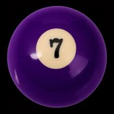

Primeiros Posts
│ ⏾ │𝘗𝘰𝘳: 𝘔𝘢𝘯𝘶 ݁ ˖Ი𐑼⋆
´.𖥔 ݁ ˖` 𝖡𝗈𝖺𝗌 𝗏𝗂𝗇𝖽𝖺𝗌, 𝗇𝖾𝗌𝗌𝖾 𝗆𝖾𝗎 𝖻𝗅𝗈𝗀 𝗏𝗈𝗎 𝖼𝗈𝗆𝗉𝖺𝗋𝗍𝗂𝗅𝗁𝖺𝗋 𝗆𝖾𝗎𝗌 𝖼𝗈𝗇𝗁𝖾𝖼𝗂𝗆𝖾𝗇𝗍𝗈𝗌.
⤷ O jogo que iria se auto deletar.
Estamos falando de UNDERTALE. Um jogo de RPG eletrônico criado de forma independente por TOBY FOX
- Na história do jogo, existem rotas . . . E a mais famosa a genocida. Nessa rota, como forma de punir seus atos por matar os personagens do jogo, era para ele se auto deletar de seu computador. Mas em vez disso, seu save é deletado. O motivo dessa troca foi por motivos éticos O jogo é pago, então ele simplesmente se apagar de seu computador depois de fazer essa rota iria gerar prejuízo
⤷ Ideia de design inusitado
Todos aqui já devem ter visto aquele fantasminha do SUPER MARIO, mas a sua criação foi um quanto inesperada, se inspirando na esposa de um dos designers.
- Quando estavam criando os personagens do jogo, tinham muita dificuldade em ter ideias, por consequência ficavam altas horas no trabalho. Acontece que, de repente a esposa de TAKASHI TEZUKA comparece no trabalho para gritar com o designer . . . Por ele ter ficado várias vezes trabalhando até tarde. Isso foi a ideia perfeita para um novo personagem, um fantasma tímido e recuado quando olham, mas quando de costas, se torna agressivo.
⤷ "É como se ele não existisse."
Este é um tópico não muito popular, estamos falando do desenvolvedor de YUME NIKKI.
- YUME NIKKI, lançado em 26 de junho de 2004. Se tornou popular por ser um jogo de RPG enigmático e surrealista, "contando" a história de uma garota chamada MADOTSUKI. Tendo como objetivo entrar em um mundo de sonhos, conhecido como NEXUS. O jogo foi criado pelo desenvolvedor misterioso KIKIYAMA. Sendo destaque por simplesmente desasparecer após lançar o jogo. Não se sabe quem é KIKIYAMA, se esse é seu verdadeiro nome, o que pensava durante a criação de YUME NIKKI.
▀▄▀▄▀▄▀▄▀▄▀▄▀▄▀▄▀▄
⤷ Ataque Hacker.
"É só um jogo de fazer pizzas, não é como se tivesse acontecido um desastre em um servidor!"
- Pizza Place é um jogo bem famoso pela plataforma ROBLOX por sua simplicidade, criado desde de 2008 por Dued1 Acontece que, em meados de 2014, em vários servidores do Pizza Place foram alterados e vandalizados por Hackers, sendo impossível de jogar. O grupo, conhecido como Team C00lkidd, se organizou para atacar vários jogos da plataforma . . . Coisa de desocupado, né?
⤷ Erro de programação.
"Vamos testar aqui para ver se deu certo . . . Que isso?!"
- Uma das maiores marcas do MINECRAFT é o personagem Creeper, que contribuiu para a formação do jogo Quando NOTCH estava criando um porco, ele acidentalmente errou as proporções e quando foi testar, saiu um porco com um formato estranho Notch viu o resultado e pensou que seria uma boa ideia trocar a textura e fazer um Mob hostil que explodia.
▀▄▀▄▀▄▀▄▀▄▀▄▀▄▀▄▀▄